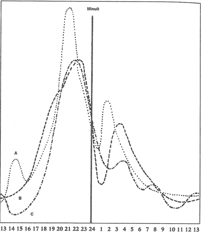
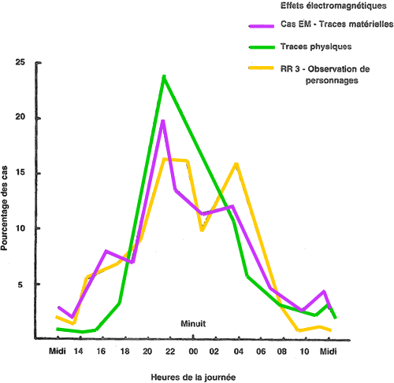
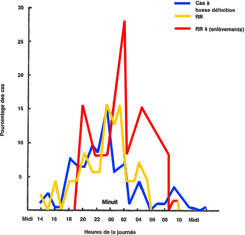

Scientific opinion has generally followed public opinion in the belief that unidentified flying objects either do not exist (the "natural phenomena hypothesis") or, if they do, must represent evidence of a visitation by some advanced race of space travellers (the extraterrestrial hypothesis or "ETH"). It is the view of the author that research on UFOs need not be restricted to these two alternatives. On the contrary, the accumulated data base exhibits several patterns tending to indicate that UFOs are real, represent a previously unrecognized phenomenon, and that the facts do not support the common concept of "space visitors." Five specific arguments articulated here contradict the ETH:
Over the last 40 years we have observed the steady development of a group of aerial phenomena generally referred to as Unidentified Flying Objects or UFOs. After a brief attempt to explain the reports in terms of secret prototypes (the "Advanced Technology Hypothesis,") two major explanations have captured the attention of the public, the media and the scientists. These two theories are the natural phenomena hypothesis and the extraterrestrial hypothesis, or "ETH."
A large majority of the scientific community, which is typically unaware of the observational data except as reported in the popular press, continues to support the natural phenomena hypothesis. It asserts that all the reports can be explained as a combination of observing errors, classical atmospheric phenomena and human-made objects, possibly combined with little-known psychological illusions which are of no relevance to physics. It concludes that no new knowledge is to be gained from further specialized study of the observations by professional scientists, perhaps with the exception of marginal improvements to the documentation of some altered states of perception.
A majority of the public and the quasitotality of the UFO researchers have supported the ETH. Under this hypothesis UFOs are physical devices controlled by intelligent beings from another planet who have been visiting the earth as part of a scientific survey begun at the time of World War II, very much in the fashion we ourselves plan to follow in exploring remote planetary environments. In their interpretation of the phenomenon, this survey includes the reconnaissance of strategic sites, the gathering of mineral and plant samples and sophisticated interaction with the human and animal lifeforms present on the planet.
The recent interest in reported abductions of witnesses has contributed what many UFO researchers regard as convincing evidence that such extraterrestrial visitors are conducting a series of biological interventions designed to collect samples of human tissue and body fluids and are engaged in cross-breeding experiments for genetic purposes.
The slow but steady accumulation of detailed reports and the continuing research on old cases make it possible to test these hypotheses against an increasingly documented data base.
The Natural Phenomena Hypothesis does not fare well under these tests. Many reports are quite specific in terms of the physical and biological parameters that can be derived from an analysis of the interaction between the phenomenon and the environment. A presentation by Velasco at the SSE Conference has pointed out that no less than 38% of the cases studied by the French CNES (Centre National d'Etudes Spatiales, the French equivalent of NASA) have failed to be identified in terms of natural effects Vélasco, J.-J.: "Methods, processing and analysis of data concerning unidentified aerospace phenomena", Society for Scientific Exploration (SSE) Conference, Boulder, Colorado, 1989.
The environmental interactions most often reported include abrasions, burns and effects on plants, animals and humans. The work of Velasco and Bounias in Trans-en-Provence (submitted for publication) is a case in point Vélasco, J.-J.: "Enquête 81/01 - Analyse d'une trace - Note Technique n° 16", 1983-03. Available from CNES, Toulouse Bounias, M.: Analysis published in "Note Technique n° 16". Available from CNES, Toulouse. So is the recent research done in Brazil, which will be part of a forthcoming report on field work conducted privately by the author over the last 10 years Vallée, J.: Confrontations, New York: Ballantine, in press (a summary of the Brazilian studies was also presented at the MUFON meeting in Las Vegas, Nevada). The observed phenomena include radiation effects and have not been accounted for by a combination of known physical and psychological causes.
At the same time, however, we find that the ETH, too, is increasingly challenged by the new patterns researchers are uncovering. Five major contradictions worthy of special examination will be studied in this paper. They have to do with the surprisingly high frequency of close encounters, with the physiological description of the "occupants," with the contents of the abduction reports, with the historical extension of the phenomenon, and with the physical behavior of the reported craft. We will discuss these five points in turn, then we will propose new hypotheses attempting to take these objections into account.
Approximately 20 years ago, when the first catalogue of close encounter reports was compiled (Vallee, ), I was surprised to find that it reached over 900 entries, well beyond the expectations of most researchers at the time. With the increased attention now placed on this category of sightings the lists of unexplained close encounters have grown beyond this early catalogue. Estimates place the size of the current sample between 3,000 and 10,000 cases, depending on the criteria that are used. We offer the figure of 5,000 as a conservative estimate.
This remarkably large number can and should be used as a challenge to the natural phenomenon hypothesis: If UFOs were simply a peculiar atmospheric effect, such as a plasma discharge, most of the still-unidentified cases could be accounted for by taking into consideration the corresponding patterns. It should also be stressed that we are not concerned here with the general appearance of UFOs in the sky but with close encounters only, those dramatic episodes in which witnesses describe a phenomenon in their immediate vicinity.
Yet the same argument can also be used against the ETH: It is difficult to claim that space explorers would need to land 5,000 times on the surface of a planet to analyze its soil, take samples of the flora and fauna, and produce a complete map. While the ETH could perhaps account for the 923 landing reports in our compilation, the theory can no longer be supported today.
Neither is the figure of 5,000 a good estimate. Many indications converge to show that only 1 case in 10 may actually get reported. Therefore, the number of close encounters we need to explain is probably of the order of 50,000. This does not take into account the fact that the overwhelming majority of our sources are located in Europe, the American continent and Australia. It is logical to assume that the phenomenon is worldwide, and that we are missing the true magnitude of the problem at least by a factor of two. This leads to a figure of 100,000 events.

If we remain faithful to a strict interpretation of the ETH, even this very large figure still underestimates the real number of actual landings. Shouldn't we assume that extraterrestrial explorers would land on our planet without regard for the presence of human witnesses? In fact Poher and I found (using independent databases) that the geographic distribution of close encounters does indicate a pattern of avoidance of population centers, with a higher relative incidence of landings in deserts and in areas without dwellings Poher, C. & Vallée, J.: "Basic Patterns in UFO observations", American Institute of Aeronautics and Astronautics, 13th Aerospace Sciences Meeting, Pasadena, California, January 20, 1975, AIAA Paper #75-42. If we follow this line of reasoning then it would be conservative to multiply our number by a factor of 10 to account for the high ratio of sparsely populated over densely populated lands. This would place our estimate at 1 million landings to be explained. In other words, if human witnesses were equally distributed over the surface of the land and if they reported every close encounter they observed, the data universe should contain 1 million records.
This number still does not take into account another important pattern in the phenomenon, namely its nocturnal character. First published in this pattern shows no significant variation between older and more recent cases and even yields the same distribution when a very homogenous sample of previously unreported cases from a single region is analyzed Poher & Vallée, 1975.
Figure 1 shows the frequency of close encounters as a function of local time of day for 3 different, nonoverlapping samples compiled by the author, namely (A) international catalogue of 362 cases prior to , (B) an international catalogue comprising 375 cases for the period and (D) 100 cases from Spain and Portugal.
On these curves it can be seen that the number of close encounters is very low during the daylight hours. It starts increasing about 5 pm and reaches a maximum about 9 pm. It then decreases steadily until 1 am, then rises again to a secondary peak about 3 am and returns to its low diurnal level by 6 am.

After these curves were published other researchers have conducted their own studies which have led to similar results. In particular Merritt (), working from Saunders' UFOCAT files, found that electromagnetic effect cases, physical trace reports and occupant reports had a major peak at 9 pm and a low daytime average Merritt, F.: "Statistical Notes on the UFO Phenomenon", CUFOS Bulletin, Winter 1977. The occupant reports showed a secondary peak about 3 am (Figure 2).
Researcher Randles () conducted her own study of 223 cases from the files of 2 British groups Randles, J.: UFO Study, London, Robert Hale, 1981 and found a very similar pattern of high nocturnal activity with a major evening peak and a secondary predawn peak. Abduction reports, however, showed a maximum about midnight (Figure 3).
Given such a stable pattern we are led to ask, what would the hourly distribution look like if we had a constant number of potential witnesses, in other words if people did not retire at night? The answer can be approximated by taking the average distribution of outdoor population as a function of time of day Szalai, 1972 and computing a deconvolution against the sighting report curve. This operation yields an activity curve that rises continuously throughout the night and peaks about 3 am. It also shows that the total number of actual events should be 14 times the number of observed phenomena. This gives a total estimate of 14 million landings in 40 years if we strictly adhere to the ETH.
The question to be answered is: What objectives could extraterrestrial visitors to the earth be pursuing, that would require them to land 14 million times on our planet?

It should be kept in mind that the surface of the earth is clearly visible from space, unlike Venus or other planetary bodies shrouded in a dense atmosphere. Furthermore, we have been broadcasting information on all aspects of our various cultures in the form of radio for most of this century and in the form of television for the last 30 years, so that most of the parameters about our planet and our civilization can be readily acquired by unobtrusive, remote technical means. The collecting of physical samples would require landing but it could also be accomplished unobtrusively with a few carefully targeted missions of the type of our own Viking experiments on Mars. All these considerations appear to contradict the ETH.
The vast majority of reported "Aliens" have a humanoid shape that is characterized by two legs, two arms and a head supporting the same organs of perception we have, in the same number and general appearance. Their speech uses the same frequency range as ours and their eyes are adapted to the same general segment of the electromagnetic spectrum. This indicates a genetic formulation that does not appear to differ from the human genome by more than a few percent.
Such an observation, if the entities were in fact the product of independent evolution on another planetary body as stated by the ETH, would stretch our understanding of biology. Humans share the unique combination of gravity, solar radiation, atmospheric density and chemical composition known on earth with an array of creatures closely related to us through evolution, yet deprived of legs and arms like the dolphins or endowed with multiple eyes like the spiders.
It should also be kept in mind that the human shape has evolved in response to an extremely narrow set of constraints. For example, it would not exist as it does today if the earth had started out with twice its present mass, giving a surface gravity of 1.38 times earth normal. Such an environment would have forced the development of a stronger skeleton and might have precluded bipeds altogether. Similarly, a planet with half its present mass and a surface gravity of 0.73 times what it is now would have radically affected our shape. As pointed out by Dole Dole, Stephen: Habitable Planets for Man, N. Y., Blaisdell, 1964 () if the inclination of the equator had been 60 degrees instead of 23.5 degrees, seasonal weather changes would be intolerable to us: life would have had great difficulty in getting started and humans would have evolved in very different ways. If the day was long instead of , mankind as we know it could not have evolved or survived at all.
How, then, can we expect that extraterrestrial visitors from a completely different planetary environment would not only resemble us but breathe our air and walk normally on the earth?
Even if, by some unknown principle of exobiology, the Aliens did evolve naturally into the humanoid shape, wouldn't they modify their bodies using genetic engineering techniques to enhance their ability to work and survive in space, as humans may have to do over the next century?
This last argument can be countered by assuming that our "Visitors" have precisely been created through such genetic manipulation into a form with which we can interact. But if that is the case, why not produce human specimens biologically indistinguishable from the earth's population? The ETH fails to give a convincing answer on this point. Even more intriguing is the observation that the reported "aliens" display recognizable human emotions such as puzzlement, interest or amusement (as in the Betty Hill case of or the Valensole case of ). This suggests not only biological similarity but extensive social acculturation. In summary, the physiology of the "Aliens" conforms to human biology and culture to an extent that is not compatible with the ETH.
The growing number of abduction reports is being used by a vocal segment of the UFO research community as further evidence that we are, in fact, being visited by extraterrestrial aliens, even if their origin has not yet been revealed. In the context of the present paper, a careful survey of the reported behavior of the alleged ufonauts argues exactly in the opposite direction.
According to current UFO magazines and books, the number of reported and documented abductions is now measured in multiples of 1,000. Such incidents are characterized by what the witness reports as being transported into a hollow, spherical or hemispherical space and being subjected to a medical examination. This is often (but not always) followed by the taking of blood samples, various kinds of sexual interaction, and loss of time. The entire episode is frequently wiped out of conscious memory and is only retrievable under hypnosis.
At this writing over 600 abductees have been interrogated by UFO researchers, sometimes assisted by clinical psychologists. Although nothing concrete seems to have been learned from these case studies about the origin and purpose of the visitors, those doing the investigations are vocal in their claim that the abductions are further evidence of the ETH.
In order to examine this claim, let us assume that extraterrestrial intelligence has indeed developed the ability and the desire to visit the earth. It is a reasonable assumption to expect that such visitors would know at least as much as we do in the fundamental scientific disciplines such as physics and biology. Few ufologists, in fact, argue against this assumption.
In particular, the visitors would presumably know as much about medical techniques and procedures as our own practitioners. Today the average American doctor can draw blood, collect sperm and ova or remove tissue samples from his or her patients without leaving permanent scars or inducing trauma. The current state of molecular biology—a science which is in its infancy on earth—would already permit that same doctor to obtain unique genetic "fingerprint" information from such samples. He could also fertilize the ova and obtain "test-tube" offspring, and it is conceivable that cloning could duplicate the beings thus produced ad infinitum.
A team of scientists equipped with the commonly reported UFO technology would be in an excellent position to take control of blood banks, sperm banks or collections of embryos available at major research hospitals and research centers without creating the massive disturbances described by abduction researchers. They would be able to accomplish it while escaping detection. Equipped with the state-of-the-art techniques of current U.S. medicine, it would be conceivable that the entire human race could, in time, be restarted from this pool of genetic material. Even gene therapy and the creation of hybrid species is well within our theoretical horizon, even if it has not completely been reduced to practice. None of these accomplishments require the procedural behavior of the "Alien Doctors" described by abduction researchers.
The means of permanently erasing the memory of the victims through the use of appropriate drugs are also available in the current pharmacopeia. Whatever the supposed "Aliens" are doing, if they actually perform what appear to be shockingly crude and cruel simulacra of biological experiments on the bodies of their abductees, is unlikely to represent a scientific mission relevant to the goals of extraterrestrial visitors. The answers may have to be sought in other directions.
The ETH was initially formulated at a time when the earliest sightings known dated from World War II. It could be validly argued that this major conflict was detected from space and that the observation of nuclear explosions on earth precipitated the Aliens' decision to survey our planet, perhaps in an effort to assess the human race as a potential threat to other intelligent lifeforms.
The mounting proliferation of evidence for similar phenomena not only before but during the 19th century and indeed in the remote past of our culture has become convincing, although some ufologists, borrowing an argument from their skeptical opponents, are now pleading that such data should simply be disregarded.
If it can be established that the phenomenon has indeed existed throughout history, adapting only its superficial shape but not its underlying structure to the expectations of the host culture, then we are unlikely to be dealing with extraterrestrials doing a survey of the earth. Nor are we dealing with advanced prototypes. Again, a more sophisticated class of explanations than both the ETH and the advanced technology hypothesis must be sought.
In previous works I have pointed out that aerial phenomena very similar to our UFOs had been reported in the 9th century in the form of vessels in the sky, as airships in the days of Jules Verne, as ghost rockets in and as spacecraft in more recent times, as if they mimicked human expectations. Everything works as if the UFO phenomenon remained consistently one step ahead of human technology. In the last 10 years, as molecular biology has become more glamorous than electronics or even aerospace in our modern civilization, it should not be surprising to find the "Aliens" performing simulacra of genetic engineering interventions. The supporters of the ETH may have fallen into the trap of a first-level reading of the phenomenon's message.
Such historical considerations, combined with extensive research on mythology and folklore have led European researchers like Meheust (, ) Méheust, B.: Science-fiction et soucoupes volantes (1978) and Soucoupes volantes et folklore (1985). Both books were published in Paris by Mercure de France and Evans () to regard the entire UFO phenomenon as a projection of the consciousness of the witnesses. They point out that science-fiction and legends, too, stay one step ahead of human scientific realizations. This "Psycho-Sociological Hypothesis" has aroused considerable opposition among U.S. ufologists and is now creating a deep chasm between European and American ufology, with the former advocating a second-degree, symbolic reading of the discourse presented by the witnesses.
The abduction claims are especially interesting to the proponents of the psycho-sociological theory: It is difficult to find a culture on earth that does not have an ancient tradition of little people that fly through the sky and abduct humans (Vallee, , ). It is standard for them to take their victims into spherical settings that are evenly illuminated and to subject them to various ordeals such as operations on internal organs and "astral trips" to unknown landscapes. Sexual or genetic interaction is also a common theme in this body of folklore.
As witnesses become less reluctant in the reporting of their experiences, the notion that UFOs are "somebody else's spacecraft" (in the words of Friedman) with the implication of a technology powered by advanced propulsion systems becomes less tenable, and possibly less appealing scientifically than other notions. But the alternative explanations, notably the psycho-sociological hypothesis, also find themselves severely challenged.
The phenomena to be explained include not only strange flying devices that are described as physical craft by the witnesses but also objects and beings that exhibit the ability to appear and disappear very suddenly, to change their apparent shapes in continuous fashion and to merge with other physical objects. Such reports seem absurd in terms of ordinary physics because they suggest a mastery of time and space that our own physical research cannot duplicate today. However, if these sightings can be confirmed either by direct observation, by photographic evidence or by the weight of statistics they may represent an opportunity to test new concepts of physical reality at a time when many theoreticians are grappling with the possible existence of N-dimensional universes, with N greater than 4.
In conclusion, it is useful to speculate about several hypotheses that go beyond the earlier theories listed in Table 1. These ideas do take into consideration, with various degrees of success, the five objections we have reviewed. These new hypotheses should only be regarded as a means of stimulating discussion, not as formal proposals (see Table 2).
One such line of speculation has been advanced by Devereux () Devereux, Paul: Earth Lights, Welligborough, Turnstone Press, 1982 who has spoken of UFOs as "Earth Lights," an unrecognized physical, terrestrial phenomenon which impresses the consciousness of the witnesses to take the form of a mental image, possibly a mythological figure. Derr and Persinger have extended Devereux' proposals.
In the mid-70's I proposed to approach the UFO phenomenon as a control system, reserving judgment as to whether the control would turn out to be human, alien or simply natural. Such control systems, governing physical or social events, are all around us. They can be found in the terrestrial, ecological and economic balancing mechanisms that rule nature, some of which are well understood by science. This theory admits two interesting variants:
British researcher Randles has stressed that the analysis of the discourse of abductees consistently reveals a breakpoint in time, after which the percipient leaves normal reality behind. On the "other side" of this boundary ordinary spacetime physics no longer seems to apply and the percipient moves as if within a lucid dream (or indeed a lucid nightmare) until returned to the normal world. Randles calls this phenomenon the "Oz Factor." Building on this observation, one could theorize that there exists a remarkable state of psychic functioning that alters the percipient's vision of physical reality and also generates actual traces and luminous phenomena, visible to other witnesses in their normal state.
Finally, we could hypothesize extraterrestrial travellers using radical methods of spacetime manipulation, notably the use of four-dimensional wormholes for space and possibly even time travel. On this subject, see Morris, Thorne, and Yurtsever () Morris, Michael S., Thorne, Kip S. & Yurtsever, Ulvi: "Wormholes, Time Machines and the Weak Energy Condition", Physical Review Letters, vol. 61, n° 13, September 26, 1988. On multidimensional models, see Mallove (, p. 255) Mallove, Eugene F.: "The Self-Reproducing Universe", Sky and Telescope, September 1988, p. 255. Such travellers could perform many of the physical feats ascribed to ufonauts and they could also manifest simultaneously throughout what appears to us as different periods in our history. This hypothesis represents an updating of the ETH where the "extraterrestrials" can be from anywhere and anytime, and could even originate from our own earth. The arguments for a multidimensional approach to the natural history of the UFO phenomenon have been developed by the author in the book Dimensions (Vallee, ).
Exciting as an extraterrestrial visitation to earth would be, this paper has pointed out that in the current state of our knowledge UFO phenomena are not consistent with the common interpretation of this hypothesis. Neither do the observed patterns support the theory that all UFOs can be explained as combinations of natural effects, or as psycho-sociological processes. Therefore it is proposed that future research in this field could fruitfully explore alternative hypotheses, such as those involving either natural or artificial control systems, earth lights or wormhole travel.
The arguments raised here are not intended as a complete refutation of the ETH or the natural phenomena hypothesis. Until the nature and origin of UFO phenomena can be firmly established it will naturally be possible to hypothesize that extraterrestrial factors, including undiscovered forms of consciousness, are playing a role in its manifestations. But any future theory should constructively address the facts we have reviewed. At a minimum, the idea of extraterrestrial intervention should be updated to include current theoretical speculation about other models of the physical universe.